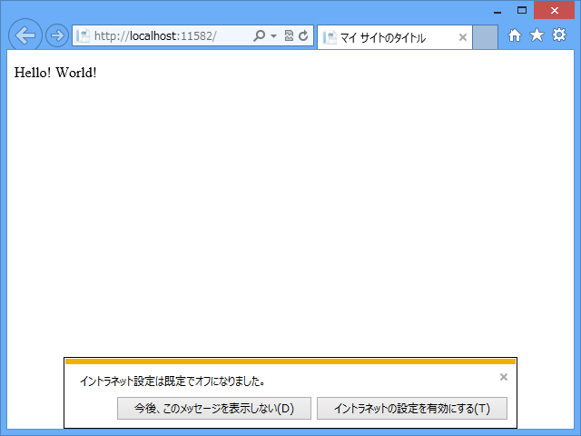
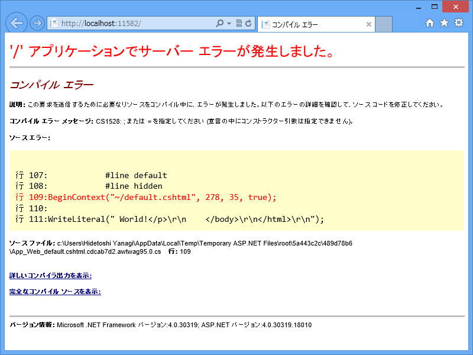
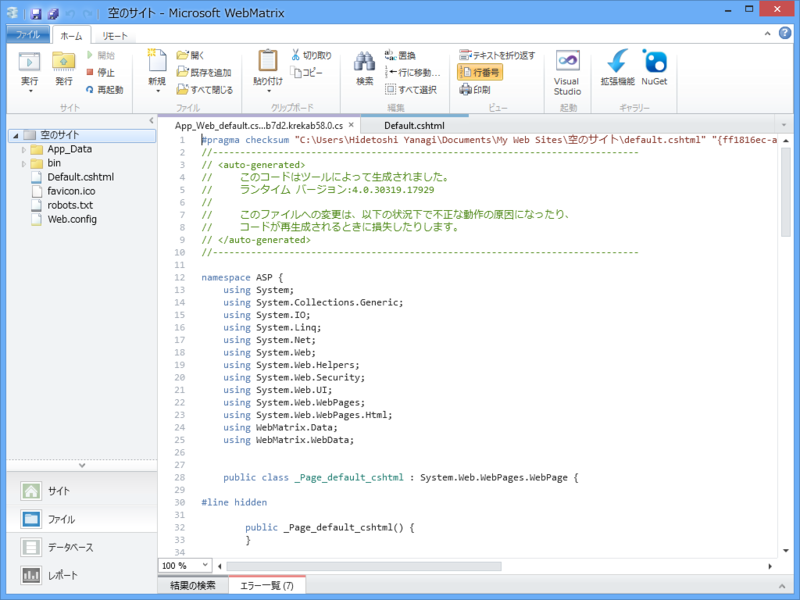

WebMatrix 2：お正月なのでいつもは書かないことを徒然なるままに
公開日：
@{
var hello = "Hello!";
}
<!DOCTYPE html>
<html lang="ja">
<head>
<meta charset="utf-8" />
<title>マイ サイトのタイトル</title>
<link href="~/favicon.ico" rel="shortcut icon" type="image/x-icon" />
</head>
<body>
<p>@hello World!</p>
</body>
</html>
これの結果は、当然“Hello! World!”ですね。

さて、Razor 構文で変数を埋め込んだ
<p>@hello World!</p>
の部分は、
<p>@(hello) World!</p>
とも書いていい、というか、もともとこの形の省略なんだな（たぶん）。
括弧を省略した場合は、スペースや記号（要は C# の変数に使えない文字）、HTML タグの手前で一度区切られ、評価が行われる。だから、もし Hello! と World! の間にスペースを入れたくなければ、@(hello)World! と書いて明示的に括弧で区切りを示さなければならない。じゃないと、@(helloWorld)! と解釈される。
@() の内容は、その値が評価され（ToString() だと思えばいい）、無毒化のうえ（つまり HtmlEncode() やな）出力される。逆に言えば、@() の内容は値をもつ変数か関数でなくてはならない。
一方、@{} の中には文を記述する。文というのは、要は ; で終わっていたり、{} で囲まれたコードの塊。たとえば、Razor で括弧を省略せずに for 文を書くときは {} が使える。
<ul>
@{
for(int i = 0; i < 10; i++)
{
<li>@(i)</li>
}
}
</ul>
わざわざこのように読みにくく書くことはないけど（ひとによってはこっちの方がいいか？）。
ちなみに、for や if のあとの {} の中身はまた少し特殊で（だから省略できないんだな……）、@{} 外と同じ感じで評価される。つまり、HTML タグと @() が使える。まぁ、理屈より書いて慣れた方が早い。Don't think, feel!
さてはて。
では、冒頭のコードで @(hello) の代わりに @{hello} を使うとどうなるでしょうか。
<p>@{hello} World!</p>@{} には文（手続きや宣言）を記述しなければならなかった。なので、これは当然コンパイルエラーに……

ぉ！ エラーメッセージに ASP.NET が吐いた中間コードのパスが書いてありますな。試しに、これをちょっと覗いてみましょう。

ほーほーほー（← あんまりよくわかっていない）。ちょっと面白いかも。
この中間コードがおさまっているフォルダをのぞいてみると、大量の意味不明なファイルがたくさん。「裏でいろんなことをしてるんだなぁ」ってのが分かると思う。
ちなみに、冒頭のコンパイル可能なコードの大まかな構造はこんな感じだった。
namespace ASP { using System; using System.Collections.Generic; using System.IO; using System.Linq; using System.Net; using System.Web; using System.Web.Helpers; using System.Web.Security; using System.Web.UI; using System.Web.WebPages; using System.Web.WebPages.Html; using WebMatrix.Data; using WebMatrix.WebData; public class _Page_Default_cshtml : System.Web.WebPages.WebPage { #line hidden public _Page_Default_cshtml() { } protected System.Web.HttpApplication ApplicationInstance { get { return ((System.Web.HttpApplication)(Context.ApplicationInstance)); } } public override void Execute() { #line 1 "C:\Users\Hidetoshi Yanagi\Documents\My Web Sites\空のサイト\Default.cshtml" var hello = "Hello!"; #line default #line hidden BeginContext("~/Default.cshtml", 32, 28, true); WriteLiteral("\r\n\r\n<!DOCTYPE html>\r\n\r\n<html"); EndContext("~/Default.cshtml", 32, 28, true); ： BeginContext("~/Default.cshtml", 271, 5, false); #line 14 "C:\Users\Hidetoshi Yanagi\Documents\My Web Sites\空のサイト\Default.cshtml" Write(hello); #line default #line hidden EndContext("~/Default.cshtml", 271, 5, false); BeginContext("~/Default.cshtml", 276, 35, true); WriteLiteral(" World!</p>\r\n </body>\r\n</html>\r\n"); EndContext("~/Default.cshtml", 276, 35, true); } } }
Razor 構文で記述した部分が、まるごと WebPageExecutingBase.Execute メソッド (System.Web.WebPages) になるのですね。@{} 内はそのまま、@() は BeginContext()～Write()～EndContext()、そのほかの HTML タグなどは BeginContext()～WriteLiteral() ～EndContext()で逐次書き込まれる感じ。
もっと Razor について知りたい人は、@shibayan にでも聞けばいいんじゃないかない。万世の屋上でも奢ればしゃべってくれると思うよ。